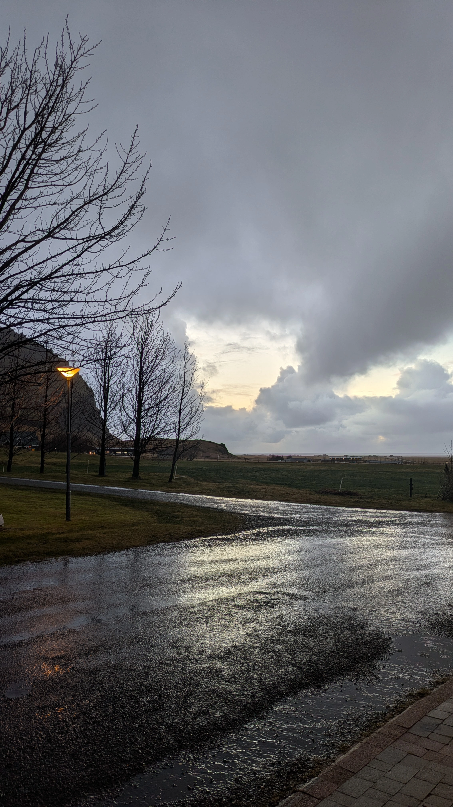

Morning.
Here's a picture I took this morning.

I was listening to future funk playlist yesterday evening that I used to listen to in the past. Still sounds fun.
I would like to try to escape this depressing episode of mine by making a gaming project I have had in my mind for some time—an Animal Crossing style videogame playable on mobile where you are a small bug taking care of a small café.
I do not know how ambitious this is or if it's a horrible idea, I just want to work towards something.
I will try to document my setup as best as I can. I am basically logging my game design document here, because why not I guess.
I have also decided to put this stinky guy as my favicon for all my pages:
He looks very stinky and I love him.
I should also get back to a graphic project that I have abondend for an online project. My work isn't that important I think, but I stopped because the direction and the information I was given was confusing for me to implement. So now I just wanna say "fuck it" and just make a general direction I guess.
I will try to continue by finishing up the user path from the starting screen to getting to the gameplay itself.